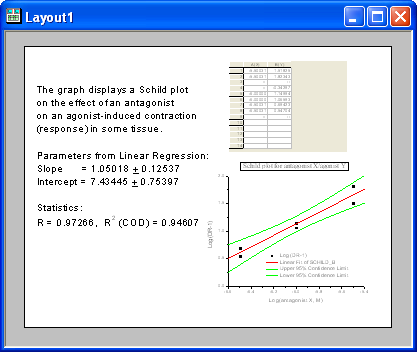
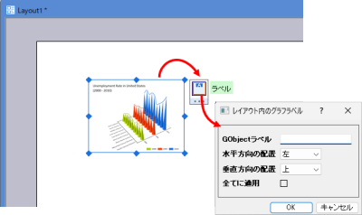
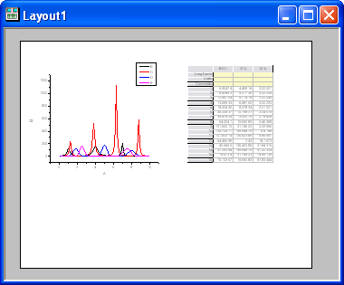
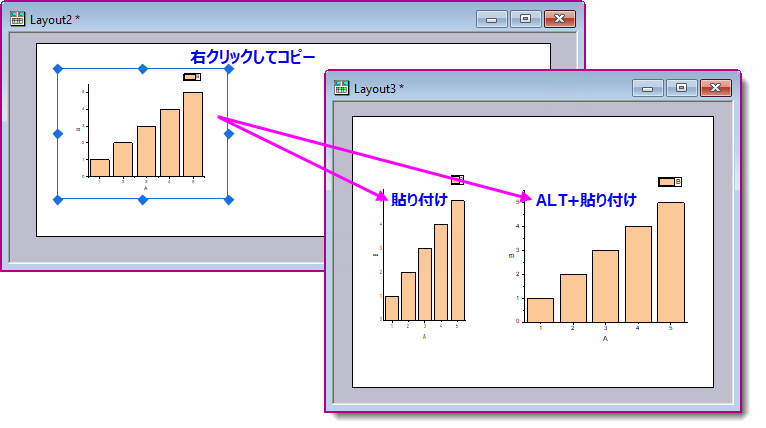
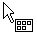

レイアウトページウィンドウの利用
ExpGraph-Layout-Window
レイアウトページウィンドウは、別々の子ウィンドウで作成および編集されたワークシートおよびグラフの「表示パネル」として機能します。レイアウトウィンドウにはグラフオブジェクトを追加することもできます。これらの図やオブジェクトをレイアウトウィンドウ内で整列してプレゼンテーションを作成し、Originから印刷したり、クリップボードまたは画像ファイルへエクスポートできます。

- ファイル：新規作成：レイアウトを選択して空のレイアウトウィンドウを作成します。
もしくは、
- ツールバーの新しいレイアウトウィンドウボタン
 をクリックします。
をクリックします。
Note：レイアウトウィンドウの名前は、Layout1, Layout2...のようになります。
レイアウトページへのグラフとワークシートの図の追加
グラフまたはワークシートをレイアウトウィンドウに追加するには
- レイアウトウィンドウがアクティブな状態でメニューから、挿入：グラフもしくは挿入：ワークシートを選択します。（もしくはレイアウトウィンドウの白い部分で右クリックしてコンテクストメニューからグラフの追加もしくはワークシートの追加を選択します） これによりグラフブラウザまたはシートブラウザダイアログボックスが開きます。
- 表示されたリストボックスからグラフまたはワークシートを選択します。
- OKをクリックします。
- レイアウトページウィンドウで1回クリックして、デフォルトサイズの図を作成します。
- または、
- レイアウトページウィンドウ中のボックスをクリック&ドラッグして、図のサイズを指定します。 マウスボタンを離すと、選択したグラフまたはワークシートの図(オブジェクト)が表示されます。
元のウィンドウがワークシートウィンドウの場合、ワークシートのグリッドとセルがレイアウトウィンドウ内で図として表示されます。 ワークシートウィンドウのテキストラベルはレイアウトウィンドウには表示されません。
元のウィンドウがグラフウィンドウの場合、グラフページないのグラフィックオブジェクトがレイアウトウィンドウ内で表示されます。 テキストラベルとその他のオブジェクトは、そのオブジェクトがグラフウィンドウのページ内にある場合、レイアウトページに表示されます (グラフウィンドウの灰色の領域はページの外側です)。
レイアウトウィンドウにグラフを追加すると、グラフオブジェクトをクリックすると、ラベルボタンを含むミニツールバーがポップアップ表示され、指定した位置合わせを使用してグラフオブジェクトにラベルを追加することができます。

 | レイアウトウィンドウを使用して、一般的なカラースケールを使用するカラーマップグラフ（等高線図や曲面図など）を集約して配置する場合でも、Origin 2019以降では、独立したカラースケールをレイアウトウィンドウに追加できます。詳細については、独立したカラースケールの追加を参照してください。
|
図を選択
- 図をクリックします。
または、
- マウスを使用して画像の周囲にボックスをドラッグします（ポインタツールを選択した状態）。

- マウスボタンを離すと、コントロールハンドルが付いた境界線が図の周囲に表示されます。
この図を選択を解除するには、レイアウトウィンドウの任意の場所(図以外)をクリックします。
複数の図をレイアウトウィンドウで選択するには
- Shiftキーを押しながら図をクリックします。
または、
- ポインタツールを使用して、複数の図を囲むように四角形を描いてドラッグします。

図のサイズを変更
- レイアウトページウィンドウで図のサイズを変更するには
- 図をクリックして、図の周囲にコントロールハンドルの付いたボックスを表示します。
- ハンドルをドラッグして、図のサイズを変更します。
- 水平方向と垂直方向のコントロールハンドルで、図の横方向と縦方向の大きさを変更します。 斜め方向(角にある)のコントロールハンドルを使用すると、縦横比を維持して図のサイズを水平方向と垂直方向両方に同時に変更できます。
- レイアウトウィンドウ中の図以外の場所をクリックして、図の選択を解除します。 コントロールハンドルで大きさや位置を変更するだけでなく、オブジェクトプロパティダイアログボックスで制御することができます。(「オブジェクトプロパティ」ダイアログボックスを開くには、レイアウトウィンドウでオブジェクトをダブルクリックします。 サイズタブを使って、オブジェクトを編集します。)
図のサイズ変更に関する注意
- 図の縦横の比率をサイズ変更の際に保つには、オブジェクトを右クリックしてショートカットメニューから縦横比を維持を選ぶか、オブジェクトプロパティダイアログボックスにあるサイズタブの縦横比を保つ」チェックボックスにチェックを付けます。(図をダブルクリックして、ダイアログボックスを開けます)
- 大きさを変更するときに縦横比を維持する別の方法として、CTRLキーを押しながらコントロールハンドルをドラッグする方法があります。 コントロールハンドルを目的の場所までドラッグします。 CTRLキーとマウスボタンを離すと、図の大きさが変わります。
- レイアウトページ中のワークシートの図のサイズを縮小したり拡大したりすると、図中に表示される行や列の番号が制御されます。
レイアウト間でオブジェクトを貼り付ける場合にサイズを維持する機能
レイアウトウィンドウに追加されると、以下のオブジェクトはレイヤ% 単位で表示されます（オブジェクトプロパティ > サイズタブ）。
- レイアウトウィンドウに貼り付けられた特定のイメージオブジェクト（EMF、BMP、DIB、OIMAGE、SVG）
- レイアウトページのショートカットメニューから追加されたグラフ（GPage）およびワークシート（WBook）
つまり、同じページサイズのレイアウト間でオブジェクトを貼り付ける場合、コピーしたオブジェクトのサイズやアスペクト比は維持されます。しかし、異なる サイズのレイアウト間でオブジェクトを貼り付けた場合、オブジェクトが歪んだり、サイズが変更されて表示される可能性があります。
異なるサイズのレイアウト間でコピー&貼り付けする際に、コピーした元のイメージ、グラフ、ワークシートオブジェクトの絶対サイズを維持するには、ターゲットレイアウトウィンドウで貼り付けを選択する前にALTキーを押してください。

図の移動と整列
- 図をクリックして適当な位置までドラッグします。
- レイアウトウィンドウ中の図以外の場所をクリックして、図を選択されていない状態にします。
オブジェクトプロパティダイアログボックスのサイズタブを使って、図の位置や大きさを変更することもできます。
- グラフをダブルクリックして、オブジェクトプロパティダイアログを開きます。
- サイズタブを選択します。
- 単位ドロップダウンリストおよびサイズテキストボックスの設定を編集します。
- テキストや画像などのオブジェクトを整列するには、レイアウトグリッドを使用できます。
- レイアウトページをアクティブにして、表示：グリッド線の表示を選択するか、ウィンドウ上部でカーソルが

の表示になったらクリックしてミニツールバーを表示して、グリッドを表示ボタンをクリックします。
- グリッドにオブジェクトをスナップするには、フォーマット：グリッド線に揃えるを選択するか、ミニツールバーのグリッドを表示ボタンのメニューにあるグリッドにスナップオプションにチェックを付けます。
| レイアウトグリッドの色は、color() 関数と@GCLシステム変数を使用して変更できます。スクリプトウィンドウ（ウィンドウ：スクリプトウィンドウ）を開いて、以下のスクリプトを入力してEnterキーを押します（スクリプト内のRGB値を実際の値に置き換えます）。
@GCL=color(R, G, B, 1)
グリッドが既に表示されている場合は、F5キーを押して変更を確認します。
|
- オブジェクト操作ツールバーを使用して図を整列する方法
オブジェクト操作ツールバー(表示：ツールバー)を使用して、レイアウトウィンドウで図(または、他のオブジェクト)を整列します。 ｢オブジェクト操作｣ツールバーのボタンは、ウィンドウ内のアクティブなオブジェクトの表示を制御します。
- 図をクリックして、オブジェクトをアクティブにします。
- 複数の図をアクティブにするには、SHIFTキーを押しながら図をクリックします。または、図の周囲にボックスを表示して、グループ単位で選択します。
- オブジェクトプロパティダイアログボックスのコントロールを使用して画像を整列する方法
- グラフをダブルクリックして、オブジェクトプロパティダイアログを開きます。
- サイズタブを開き、位置グループの左または上を編集します。 複数のオブジェクトに対してこのボックスを編集すれば、垂直または水平にオブジェクトを整列させることができます。
図の編集
レイアウトウィンドウ内の図の表示を変更するには、関連するウィンドウでグラフまたはワークシートを編集します。
- ソースとなるグラフやワークシートウィンドウを編集するには
- レイアウトページで図を右クリックします。
- ショートカットメニューからウィンドウにジャンプを選択します。
グラフまたはワークシート中の図を変更した後にレイアウトウィンドウをアクティブすると、変更が反映されます。 レイアウトウィンドウに変更が反映されない場合は、ウィンドウ：リフレッシュメニューまたは「標準」ツールバーのリフレッシュ を選択してウィンドウを更新します。
を選択してウィンドウを更新します。
図に背景を追加
他のオブジェクトと同様、レイアウトウィンドウの図に背景の表示を追加することができます。
- グラフをダブルクリックして、オブジェクトプロパティダイアログを開きます。
- イメージタブを選択します。
- 背景チェックボックスを選択し、ドロップダウンリストから背景を選択します。
|
Note: この背景の適用ができるのは、1つのウィンドウまたはウィンドウ内の各オブジェクトに対してです。 ウィンドウの各オブジェクトに適用すると、背景表示は図から無くなります。
|
レイアウトウィンドウのグラフオブジェクトについてのコンテキストメニューのフォーマットのコピー/貼り付け
グラフオブジェクトのフォーマットをコピーし、そのフォーマットを他のグラフオブジェクトに貼り付けることができます。例えば、
- レイアウトページを開き、レイアウトページに2つのテキストオブジェクト"test1"と"text2"を追加します。
- テキストオブジェクトtest1を右クリックし、オブジェクトプロパティをクリックしてオブジェクトプロパティダイアログを開きます。
- 背景ドロップダウンリストで影を選択します。OKをクリックして、ダイアログを閉じます。
- オブジェクトtest1を右クリックし、コンテキストメニューフォーマットのコピー：背景を選択します。
- オブジェクトtest2を右クリックし、コンテキストメニューフォーマットの貼り付けを選択します。「test1」の背景が「test2」に反映されました。
レイアウトウィンドウの再描画の高速化
次の二通りの方法で、レイアウトウィンドウの再描画を高速化できます。
- 図をクリックして選択します。
- レイアウト：イメージ枠の設定を選択します。
イメージ枠が有効になると、メニューコマンドの隣にチェックマークが現れます。
イメージ枠から図の表示に戻すには
- イメージ枠をクリックして選択します。
- レイアウト：イメージ枠のクリアを選択します。
- または、
- 図のオブジェクトプロパティダイアログボックスのイメージタブにあるイメージ枠を使用チェックボックス、またはオブジェクトを右クリックして、イメージ枠の設定/クリアを選択し、図のイメージ枠の表示を制御します。
イメージ枠は図のように移動したり、サイズを変更できます。 イメージ枠をダブルクリックすると、そのイメージ枠の｢オブジェクトプロパティ｣ダイアログボックスが開きます。 背景ドロップダウンリストに入力された変更は、イメージ枠を非表示した際に表示されます。
|
Note: レイアウトウィンドウを印刷する場合、図のイメージ枠の表示は印刷に影響しません。
|
- 関連するウィンドウの表示モードとは関係なく、図をページビューモードで表示する方法
レイアウトウィンドウ中の全ての図(及び追加のオブジェクト)をページビューモードで表示するオプションがあります。これは、図のウィンドウの表示モードに影響されません。 ページビューモードでは、印刷ビューモードより速く画面が更新されます。 レイアウトウィンドウの図(及びオブジェクト)をページビューモードで表示するには
- レイアウト：スピードの全般制御を選択します。
または、
- レイアウトウィンドウの内側、ページの外側を右クリックして、スピード全般の制御を選択します。 図がページビューモードで表示されている時には、このメニューコマンドにチェックマークが付けられています。 このモードの選択を解除するには、スピード全般の制御メニューコマンドを選択し直します。
ページビューはスクリーンドライバを使用して表示を行うため（印刷ビューはプリンタドライバを使用）、スピード全般の制御が有効な場合、レイアウトページ上でのテキスト配置が
正確でない場合があります。 ただし、実際の編集は子ウィンドウで行うため、大きな問題にはなりません。 テキスト配置を確認するには、子ウィンドウをアクティブにして表示：印刷ビューを選択してください。 レイアウトページ上の画像は、子ウィンドウの「印刷ビュー」と同じ見た目で印刷されます。
レイアウト・グラフウィンドウのワークシートオブジェクトを変更を更新
ワークシートの列の幅、行の高さ、フォントの色、塗りつぶしの色などが変更した際には、レイアウト・グラフウィンドウのワークシートオブジェクトを右クリックしてコンテクストメニューから更新を選びます。
オブジェクトのプロパティダイアログのプログラミングタブで更新ボタンをクリックすることで、同様にレイアウトやグラフを更新できます。
オブジェクトにレイアウトページサイズを合わせる
レイアウトページサイズを拡張して、挿入されたすべてのオブジェクトを含めるには、
- レイアウトウィンドウがアクティブな状態で、フォーマット：オブジェクトにページを合わせるを選択してページをレイヤ群のサイズに合わせるダイアログを開きます。
- レイアウトページの余白を指定します。
- OKボタンをクリックしてページサイズと余白を適用します。
ホットキーCtrl+Shift+Eを押すと、ダイアログを開かずにこの操作が実行できます。この場合、最後に使用したダイアログの設定（テーマ）がレイアウトウィンドウに適用されます。もし直前の設定がない場合は、システムのデフォルト設定が適用されます。